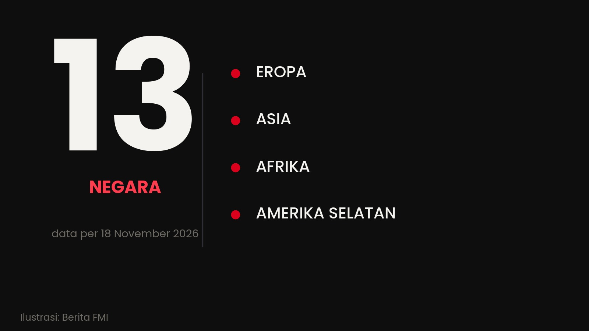
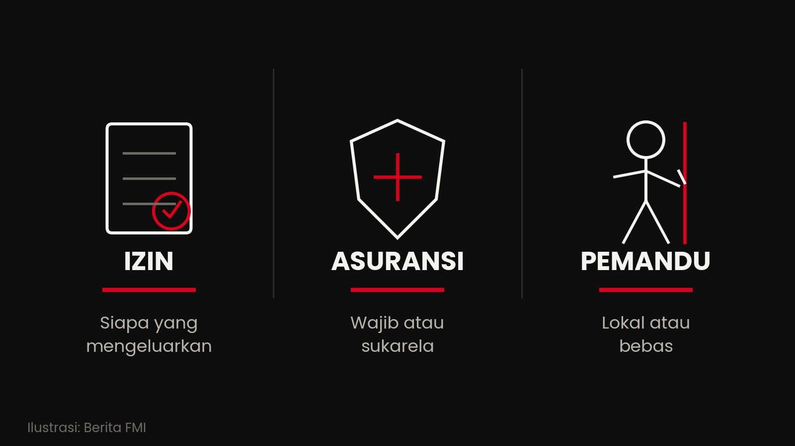

INDONESIA - Federasi Mountaineering Internasional (UIAA) meluncurkan katalog akses global pada Selasa (18/11/2026). Isinya satu tempat untuk mencari tahu aturan mendaki, memanjat, hiking, dan trekking di berbagai negara.
INDONESIA - The International Climbing and Mountaineering Federation (UIAA) launched a global access catalogue on Tuesday (18/11/2026). It puts rules for climbing, mountaineering, hiking and trekking in different countries in one place.
Katalog itu diperkenalkan dalam sidang umum UIAA di Kathmandu, Nepal. Bentuknya peta interaktif dan basis data yang bisa ditelusuri per negara atau per federasi.
The catalogue was introduced at the UIAA General Assembly in Kathmandu, Nepal. It takes the form of an interactive map and a searchable database that can be browsed by country or by federation.
UIAA adalah induk federasi panjat dan mountaineering dunia, bermarkas di Bern, Swiss. Lembaga ini yang menerbitkan standar keselamatan alat panjat lewat label UIAA Safety dan menyusun panduan medis serta pelatihan bagi federasi anggotanya.
The UIAA is the world governing body for climbing and mountaineering, headquartered in Bern, Switzerland. It issues climbing equipment safety standards through the UIAA Safety Label and produces medical guidance and training material for its member federations.
Data yang terkumpul baru dari 13 negara, tersebar di Eropa, Asia, Afrika, dan Amerika Selatan. Setiap entri memuat syarat izin, kewajiban asuransi, aturan pemakaian pemandu gunung, hingga pembatasan lingkungan, termasuk yang menyangkut satwa dan musim kunjungan. Menurut UIAA, pembatasan lingkungan itu sejauh ini jadi topik paling sering muncul dalam data yang masuk.
Data so far comes from 13 countries across Europe, Asia, Africa and South America. Each entry covers permit requirements, insurance obligations, rules on the use of mountain guides, and environmental restrictions, including those relating to wildlife and seasonal access. According to the UIAA, environmental restrictions have been the most common topic in the data supplied to date.

"Katalog ini mengumpulkan kondisi dan pembatasan akses di sebanyak mungkin negara. Kami punya 100 asosiasi anggota, dan ini cara bagi pengunjung untuk melihat sekilas bagaimana mengurus akses saat merencanakan perjalanan ke luar negeri," kata Victor Saunders, Wakil Presiden Komisi Mountaineering UIAA.
"The access catalogue brings together the access conditions and restrictions in as many countries as possible. We have 100 member associations, and this is a way for visitors to have a first glimpse of how to deal with access when planning a foreign journey," said Victor Saunders, Vice President of the UIAA Mountaineering Commission.
Pembatasan akses tidak muncul dari satu sebab: kekhawatiran lingkungan, status kepemilikan lahan, undang-undang setempat, dan aturan musiman. Semua keterangan dikirim langsung oleh federasi nasional, lalu diperiksa Komisi Mountaineering sebelum dimasukkan ke basis data.
Restrictions rarely come from a single cause: environmental concerns, land ownership, local legislation and seasonal rules all play a part. All entries are submitted directly by national federations and vetted by the Mountaineering Commission before entering the database.
Bagi pendaki yang berencana ke luar negeri, informasi semacam ini biasanya baru ketemu setelah tiket dibeli. Izin khusus kawasan lindung, asuransi yang diwajibkan, keharusan memakai pemandu bersertifikat, atau larangan mendaki di musim tertentu jarang tertulis di brosur perjalanan.
For climbers planning a trip abroad, this kind of information usually surfaces only after tickets are bought. Special permits for protected areas, mandatory insurance, certified guide requirements or seasonal closures rarely appear in travel brochures.
Katalog ini menutup sebagian celah itu. Sebelum memesan tiket, calon pendaki bisa memeriksa tiga hal dasar: izin apa yang harus diurus, apakah asuransi diwajibkan, dan apakah kawasan itu mensyaratkan pemandu lokal. Ketiga hal itu yang paling sering menggagalkan rencana pendakian di negara orang.
The catalogue closes part of that gap. Before booking tickets, a climber can check three basics: which permits must be arranged, whether insurance is mandatory, and whether the area requires a local guide. Those three are the most common reasons a trip abroad falls apart.

Indonesia punya persoalan yang mirip, hanya arahnya ke dalam. Izin masuk kawasan taman nasional diajukan lewat aplikasi Ayo ke Taman Nasional yang dibahas Berita FMI pada artikel 011, sementara tiap kawasan punya kuota, jalur resmi, dan aturan sendiri soal porter serta pemandu.
Indonesia faces a similar problem, only turned inward. Permits to enter national park areas are filed through the Ayo ke Taman Nasional application discussed by Berita FMI in article 011, while each area sets its own quota, official trails and rules on porters and guides.
Karena itu, nilai katalog ini bukan sekadar daftar larangan. Ia menunjukkan bahwa negara-negara lain juga menaruh syarat pada pendaki, dan syarat itu bisa dibaca sebelum berangkat, bukan setelah sampai di gerbang jalur.
The value of the catalogue, then, is not a list of prohibitions. It shows that other countries also attach conditions to climbers, and that those conditions can be read before departure rather than at the trailhead.
Bagi FMI, informasi akses yang terbuka sejalan dengan kerja pembinaan pendaki. Pendaki yang tahu aturan kawasan lebih jarang masuk jalur tanpa izin, lebih siap secara logistik, dan lebih kecil risikonya mengalami insiden di ketinggian. Aturan yang terbaca juga melindungi warga di sekitar kawasan.
For FMI, open access information sits alongside its work on climber development. Climbers who know area rules are less likely to enter trails without permits, are better prepared logistically, and face lower risk of incidents at altitude. Written rules also protect the communities living around those areas.
Katalog bisa dibuka di laman Global Access Catalogue milik UIAA. Federasi nasional yang belum terwakili diundang mengirim data, dan entri lama bisa diperbarui bila aturan di negaranya berubah. Karena setiap kiriman diperiksa komisi lebih dulu, isinya bukan kumpulan kabar dari forum pendaki.
The catalogue is available on the UIAA Global Access Catalogue page. National federations not yet represented are invited to submit data, and existing entries can be updated when regulations change. Because every submission is vetted by the commission first, the entries are not a collection of hearsay from climbing forums.
Carousel: aturan akses 13 negara dalam satu katalog
Carousel: access rules for 13 countries in one catalogue
Geser untuk membaca versi ringkasnya.
Swipe to read the short version.